|
|
Home | About | Reviews | Articles | Contact |
Krabi province ranks fifth in tourism income in Thailand with six million arrivals. Only Bangkok, Phuket, Chonburi, and Chiang Mai earn more from tourism. Arrivals are concentrated from November to April. The crush of high-season visitors has come at considerable cost to the environment. Local authorities have devised a program, "Krabi 365 Days" to move some high-season visitors to the off-season, from May to October, called the "green season" by tourism officials, partly due to the seasonal rains. Tourism revenue has grown at an average of eight percent annually. In 2018, tourism income is expected to hit 100 billion baht, up from 96 billion in 2017. The top visitors are Chinese and Malaysians. Scandinavians number in the top five visiting nationalities. According to the Tourism Authority of Thailand (TAT) as of 2018 there are 460 hotels in the province, with some 200 additional hotels in the process of being licensed and another 200 in the preliminary stages of consideration. |
|
Content: Culture & Tradition Best Places To Explore Live .Love .Eat Best Things To Do |
| 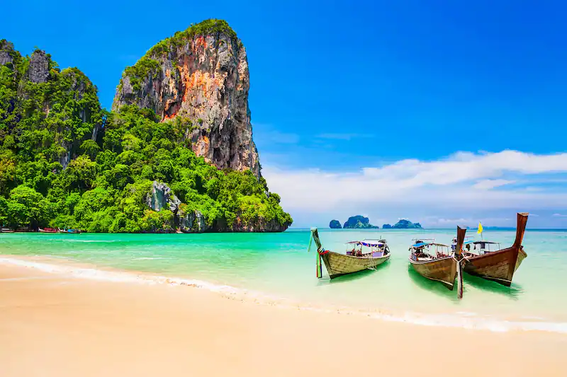 | Krabi is famous for its scenic view and breathtaking Beaches and Islands. Its coral reef vistas are also one of the world’s most beautiful, which makes the city a great spot for coral diving. With attractions including hot springs, a wildlife sanctuary, sea caves, flourishing coral reefs and exotic marine life, limestone cliffs that draw rock climbing enthusiasts from around the world, and national parks that include the island paradises of Koh Phi Phi and Koh Lanta, one could easily spend weeks in Krabi and leave yearning for more. “Town” to most visitors is Ao Nang, a seaside strip of guesthouses, hotels, restaurants, and Souvenir shops that continues to grow as tourist arrivals increase, now spreading north into Noppharat Thara, whose quiet . Ao Nang is the major launching point for Boat trips to nearby islands and the isolated beaches of Phra Nang Cape, where the famous former hippie enclave of Railey Beach is located. |

| Thai culture is predominantly an Indian culture, though many inhabitants of Krabi are descended from Chinese immigrants. While Buddhism defines much of Thailand's culture overall, Krabi is an eclectic mix of Muslim, Buddhist, and Chinese-Thai influences, with a small number of gypsies. Krabi's citizens celebrate a number of Chinese holidays and its Muslim population observes its share of rituals. The culture may seem, to the outsider, contradictory at times. While overall, there is an unstated mutual respect based on Buddhist traditions, partiality is shown to different sets at different times. For example, the elderly are generally deferred to, except in the presense of a monk, in which case, the monk is favored. So, status more than age is the standard adhered to. Women are generally on the lower rungs in regard to societal rank.Agriculture plays a large part in Krabi society, which is predominantly rural. Originally, Krabi was established as a source of elephants for nearby Bangkok. Rubber, coconut, and pineapple plantations eventually covered much of the surrounding area, and was Krabi's major industry long before tourism. | 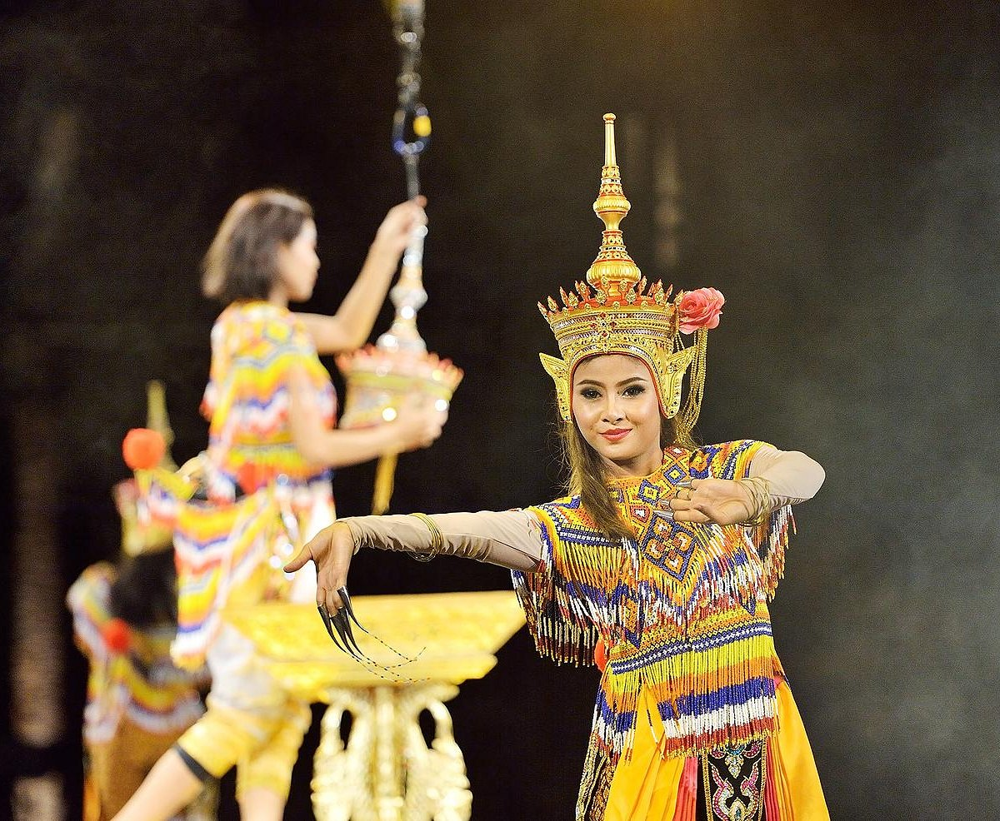 |

| 1. Railay Beaches And Caves | |
| Glittering white sand, stunning landscapes, shining sun, transparent water and tropical climate of Railay Beach are quite pleasing. However, all these things don’t set it apart; what indeed set it apart is its limestone caves ceded in high and mighty cliffs. Even though it is accessible only by boats (due to sharp cliffs on both sides), Railay Beach has been able to gain popularity as one of the best places to visit in Krabi. Apart from its few long-tailed boats and scanty bars, the island is secluded. This is also one of the best Krabi attractions one must visit.
What’s special: Limestone caves and seclusion from all the world |
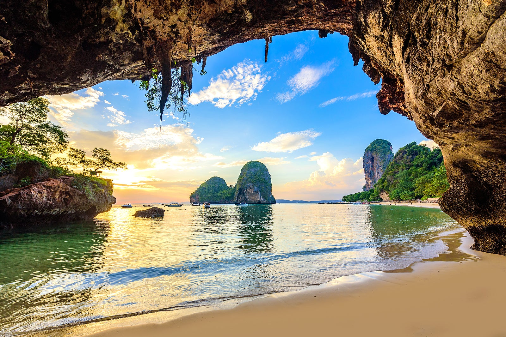 |
| 2 . Thung Teao Forest Natural Park | |
| Fabled beauty and ethereal landscapes are two apt phrases used to describe Thung Teo Forest Natural Park. High trees in the darkest of greens, deep emerald-colored water at its purest, wildlife at its maximum ease, and beauty at its unusual prime – the stunning waterfall in the middle of the Natural Park gives off the surrealistic charm. So much beauty and there are no takers for it? Not possible! Thung Teao Forest Natural Park is one of those unmissable spots that should be on the list even if you are looking for places to visit in Krabi in 2 days or 3 days. Often bustling with photographers and nature lovers as the park offers various opportunities and landscapes to capture this otherworldly beauty in camera or on canvas. | 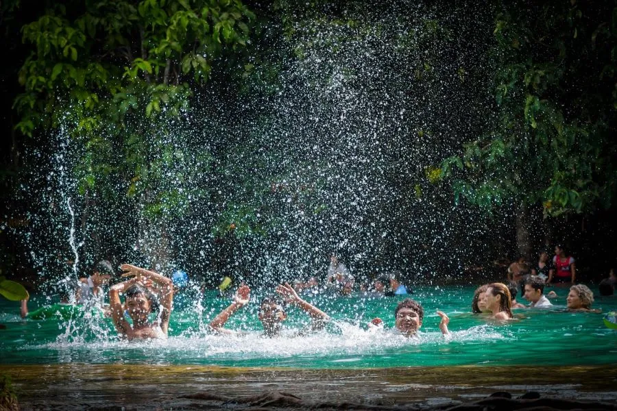 |
| 3. Krabi Town | |
| Even after being termed as one of the best places to visit in Krabi, Krabi Town has managed to retain its old-world charm and simplicity. Amidst all the hoopla, it has been able to live and breathe as it used to several decades back. Even though it has been introduced to modernity, the town is still considered a homely place which spreads a comforting blanket over home-sick and troubled people. Several fishing boats line the dock, small bars welcome the tourists, quaint café see many evening teas and morning breakfasts being held in them, beautiful parks have seen tourists and locals mingling and jingling with each other. | 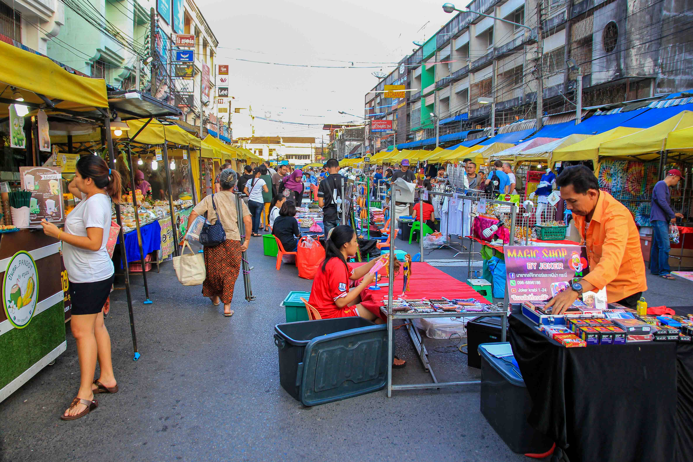 |
| 4. Phi Phi Island | |
| Remember the paradisiacal island from the Leonardo DiCaprio starrer, The Beach , of 2000? Well, that heavenly place from the fabled map does exist, though with the name Phi Phi Islands. A 45 minutes boat ride from mainland Krabi takes you through the illustrious journey to find this piece of heaven. Only one of the two islands – Phi Phi Don and Phi Phi Leh – is inhabited. Tourists flock to Phi Phi Don with the motive to connect with the natives as well as nature. The tropical paradise is known for its turquoise water and pristine beaches. You can even take your own yacht to the islands if you plan to stay longer than 4 hours. This place is also surrounded by some of the best hotels in Krabi. | 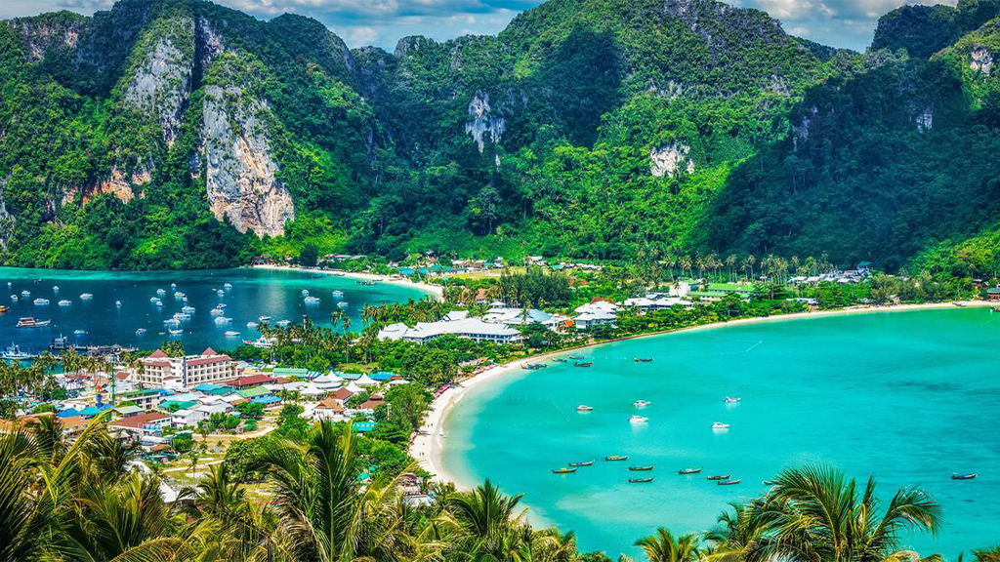 |
| 5. Krabi Elephant Sanctuary | |
| Krabi Elephant Sanctuary is a new home for those elephants that have become overtired after working in logging and tourism industries for years. The sanctuary tries to get these elephants back into their natural habitat where they can form herds and live the rest of their lives without the risk of being overworked. You can feed and walk with the elephants and watch them while they enjoy a splash in the natural lagoon nearby. | 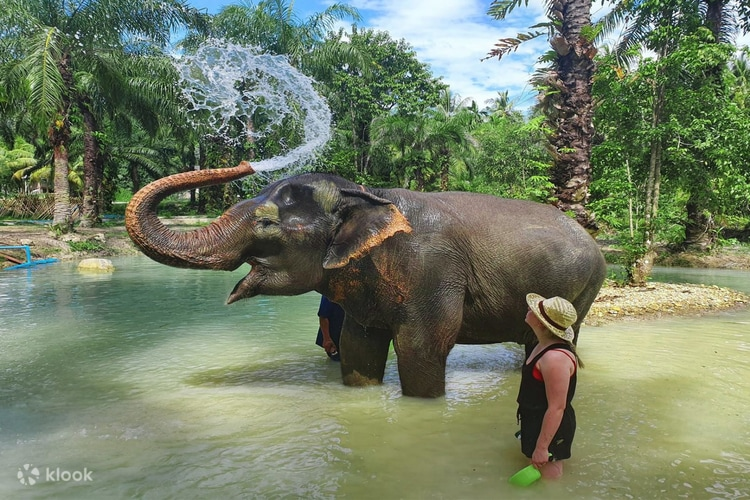 |

| 1. Khao mok gai. | |
| Traditionally prepared and eaten mostly by the Muslim-Thai, khao mok gai (chicken burried in rice) is a Halal dish that was introduced to Thailand by Persian merchants centuries ago. In fact, the dish is the Thai version of chicken biryani and was first mentioned in a Thai literature classic from the 18th century.
Just like in the original recipe, both chicken and rice are heavily flavored with the traditional biryani spices like curry powder, coriander, cardamom, turmeric, cumin, and cinnamon. However, in Thailand, the dish is served sided with fresh tomatoes or cucumbers, and the obligatory nam jim dipping sauce consisting of fresh mint and ginger. |
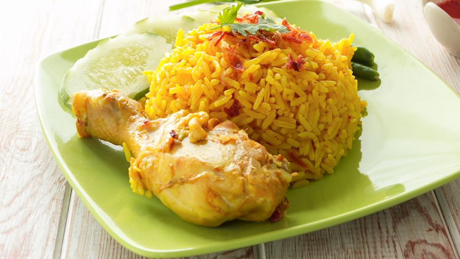 |
| 2. Thai Curry. | |
| Thai curry is usually a soupy dish consisting of coconut milk or water, meat, and curry paste. Unlike the thicker Indian curries, Thai curries have a more soup-like consistency, and the cooks prefer to use fresh herbs and aromatic leaves instead of spice blends that are prevalent in Indian curries.
In many Thai homes, curry is consumed on a daily basis, and the cooks can choose from two varieties of Thai curry: water-based or coconut milk-based curries. The most popular water-based curry is sour curry, or gaeng sohm plah, which is often prepared with fish or seafood, while the sour flavor comes from tamarind. |
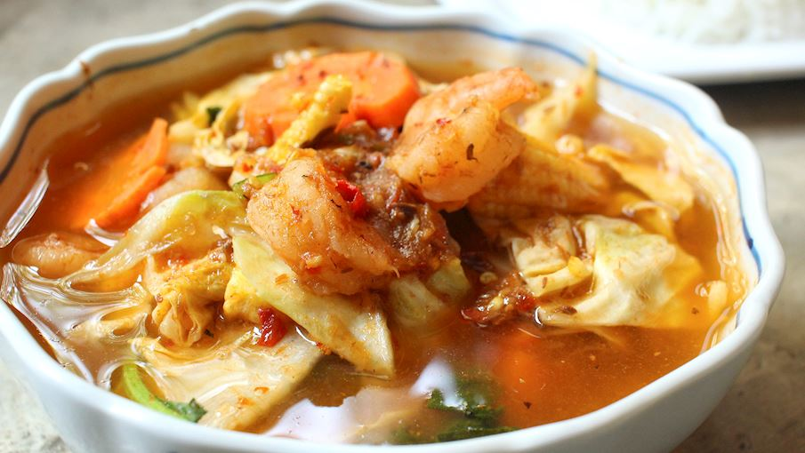 |
| 3. Cold noodle salad with fish curry dressing. | |
| Noodles with fish curry sauce or kanom jeen nam ya is a dish of many flavors. This dish can taste totally different depending on the variety of the accompanying vegetables. The vegetables can be served fresh or boiled. The main ingredients are curry paste, rice noodles, and fish, which you can made from fresh or canned tuna. There are various types of vegetables to serve with fish curry and noodles such as long beans, cucumber, bean sprouts, and lemon basil. |
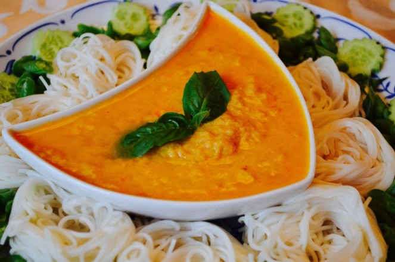 |
| 4. Black grass jelly. | |
| Grass jelly is made by boiling a plant called Chinese mesona along with starch and potassium carbonate (the same alkaline substance used to make alkaline noodles and jianshui zong). Grass jelly is mostly tasteless, with a slight hint of bitterness and the texture of jello. People often cook their own grass jelly in China, or they make it from a powder that also requires cooking. |
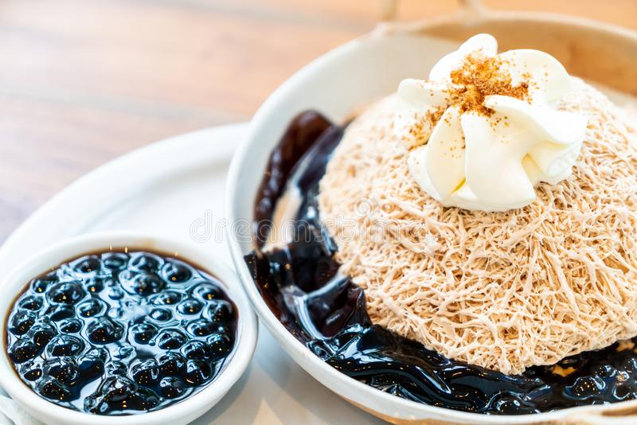 |

| 1. Four Islands: For Sunbathing | |
| The four of the seasoned points of interest in Krabi are Tup Island, Phra Nang Cave, Chicken Island, and Poda Island. The tour to these four islands is popularly known as Four Island Tour in Krabi. The tour stops at every island for enough time for you to indulge in sunbathing, swimming, eating, exploring, and relaxing. The tour usually takes a day to complete, including leisure and traveling time. The tour serves your purpose of going for Krabi sightseeing at minimal cost and with a set of guides. Individually, these islands don’t have much to offer except their exquisite beauty and serene environment. However, when combined, these four islands impress the tourists to no bound. | 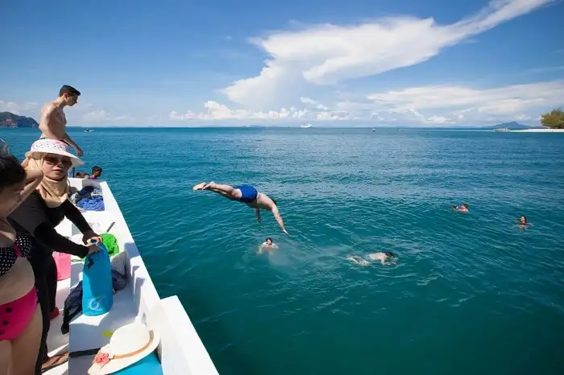 |
| 2. Enjoy Krabi Weekend Night Market | |
| Make your weekends brighter and more happening by visiting this weekend market in Krabi that happens during the nighttime. The market is set up in the streets of Pak Nam, you can buy some really cool stuff here. Vibrant and vast, you must consider coming to this market when you want to explore some of the best places to visit in Krabi at night. | 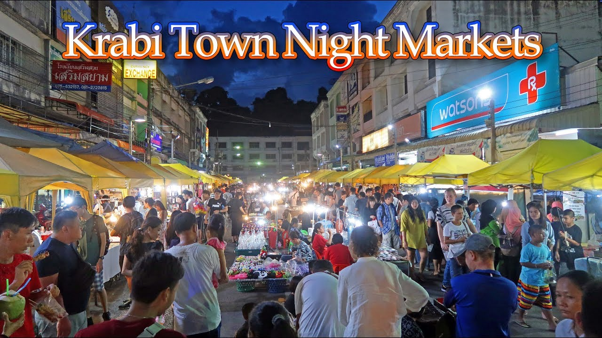 |
| 3. Visit The Mud Crabs Sculpture. | |
| The beauty of Krabi is beyond the surreal beaches and the tropical forests. And one of the living proofs is the Mud Crabs Sculpture which is one of the best attractions in Krabi situated at the bank of Krabi River. The sculpture of the crab is embodied with a fable which is quite famous in the region called the “Crab and its mother”. Alongside this it also showcases the extraordinary craftsmanship of the visual representation of motherhood and respect. |  |
| 4. Chilling Experience: Khlong Chak Waterfall. | |
| Encircled by tropical rainforest, Khlong Chak Waterfall is a major tourist attraction in Krabi where it is best known for its beautiful serenity and trekking experience. Since the water at the bottom of the waterfall is not deep, non-swimmers can enjoy a refreshing bath in the pool. After a moderate hike, you can reach the waterfall and simply relax while admiring the striking waterfall or can take a plunge in the chilling waters. |  |